Replicating Results: Corneal Endothelium Image Processing
TL;DR:
- In line with the 1991 paper by Zhang et al. [1], a simple conv-net was trained on dataset [2] to extract cell boundaries from microscopy images of human corneal endothelium
- The model was then tested on a separate, more challenging dataset [3], yielding poor results
- Training on dataset [3] explicitly stalled, producing results of similar quality to the attempted transfer learning
- Fine-tuning the model trained on dataset [2] with images from [3] required a large number of epochs, but produced a significant improvement on further, previously unseen samples from [3]
Introduction
Looking for practical projects to practise ML skills, inspired by Seoirse Murray’s attempt at replicating an old research paper, I decided to also have a go. I also explored a few different areas, such as the ability of a model trained on one set of images to perform on a different dataset with a different distribution, both out-of-the-box and after fine-tuning.
The images in question are microscopy images of human corneal endothelium — cells which tightly tessellate the posterior surface of the cornea and regulate the flow of fluid to keep the cornea at the right level of hydration for optical transparency. The cells are approximately hexagonal and fairly uniform in size, and deviations from those two characteristics are used in diagnostics of various pathologies.
In the 1990s, analysing the shape and size distribution was a laborious manual task, so Zhang et al. [1] attempted to develop a semi-automated processing pipeline to detect and extract a high-contrast mapping of the cell boundaries. To achieve this, they applied a simple convolutional neural network composed of three convolutional layers.
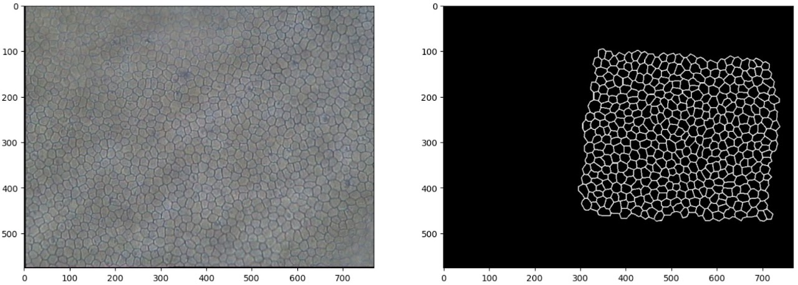
Architecture
As can be deduced from the table below, the inputs are single-channel greyscale images, as the first convolutional filter has only one channel. The size of subsequent layers reduces gradually as a result of relatively large kernels (relative to image size), with the output labels being only 67 pixels across.
| Layer | Kernel size | Channels in | Channels out | Parameters |
|---|---|---|---|---|
| Conv1 | 11×11 | 1 | 3 | 363 + 3 |
| Conv2 | 11×11 | 3 | 2 | 726 + 2 |
| Conv3 | 11×11 | 2 | 1 | 242 + 1 |
| Total | 1337 |
It is worth noting how few parameters this is. Given that the authors used just two training images of only 97×97 pixels each (giving a total of just under 19,000 pixels), there isn’t much scope for increasing the model significantly without running a serious risk of overfitting.
Training
The authors have not made their data available, so following Seoirse’s example, I used an alternative dataset [2]. I extracted both 97×97 images (with corresponding 67×67 labels) and somewhat larger 200×200 images (with labels of equal size), with the intent of training one model exactly matching Zhang’s proposal and another, slightly modified one utilising padding and fed more data.
Training the network in line with the authors’ instructions turned out to be somewhat challenging. In particular, the learning rate applied (0.05) was quite large, and despite reproducing the recommended parameter initialisation within the [−0.3, 0.3] range and the recommended bipolar sigmoid activation function, all attempts resulted in the loss oscillating without convergence. The largest learning rate for which convergence was successfully achieved was 0.01, but it required several attempts and a fair bit of luck in the initial parameter allocation. Nonetheless, both the loss curves and the number of iterations looked very similar, with overtraining commencing around ~400 iterations.
Results on the baseline dataset
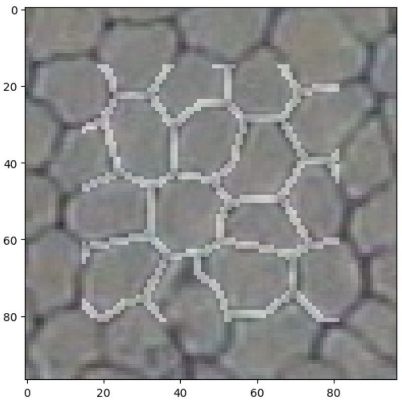
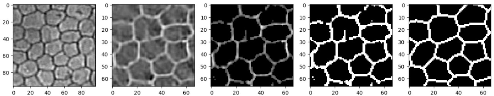
The small sample in Figure 3 appears to reflect the ground truth very well. There are a few artefacts in some cells (such as a protruding vertical edge in the cell just above centre), but only where those artefacts are directly connected to a cell boundary; isolated spots and splodges are mostly absent from the output.
Trying the network on a deliberately difficult example helps evaluate the limits of this simple model. It performs remarkably well even in out-of-focus areas — at a glance, gaps in the output correspond to areas that even a human annotator would find difficult, if not impossible, to annotate with confidence.
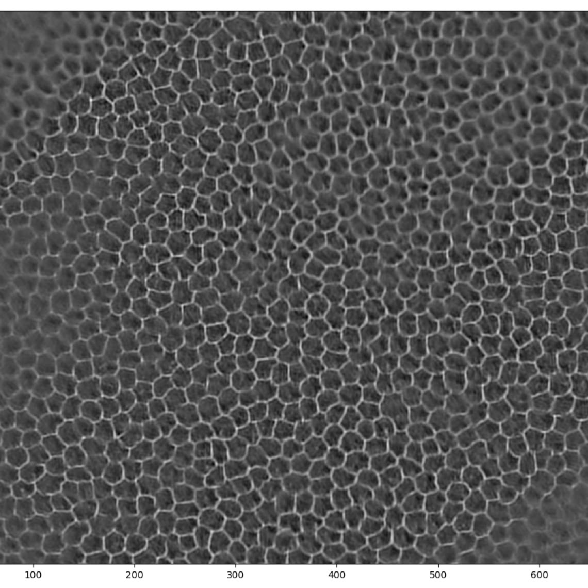
Training with larger images
Next, I trained a network with eight slightly larger images, 200×200 pixels. Since the images in the original dataset were on a larger scale (more cells per image), the idea was to give the network images where the number of cells would be more similar to that in the original paper.
Once again, achieving convergence required learning rates significantly lower than those used in the original paper — the loss would oscillate for anything above 0.003. The network also took longer to train (approximately half an hour on a laptop CPU). The loss curve shows a number of inflection points, probably representing areas of shallower gradient within the loss function. The oscillating regions represent instances where I paused training to experiment with larger learning rates; on both occasions this caused the loss to begin oscillating.
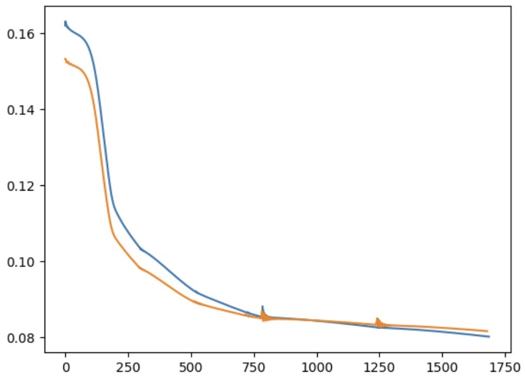
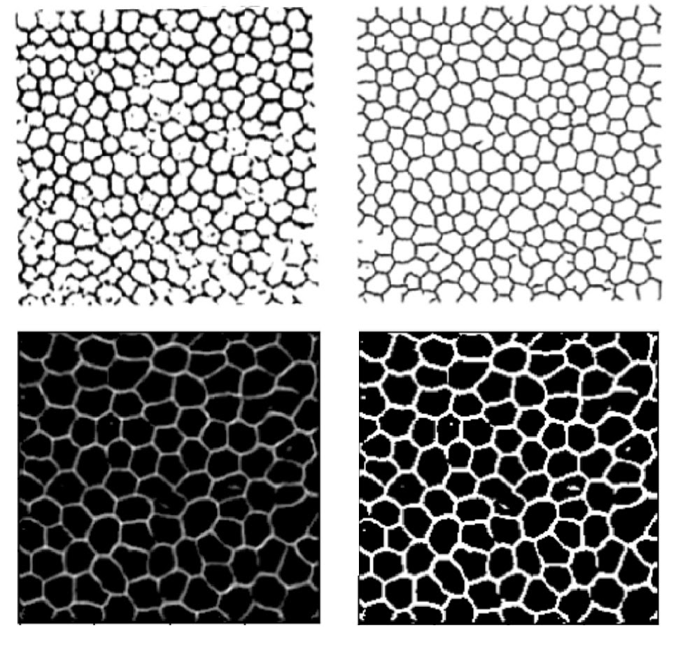
After basic filtering of the raw outputs (thresholding then binarising), the results are visually similar to Zhang’s. The traced lines are somewhat thicker than the ground truth, suffer occasional breaks, and feature small ‘islands’ inside the boundaries where the original image dipped in intensity due to debris or non-boundary cellular features. While Zhang applied post-processing to remove some imperfections, I did not pursue that angle as my focus was on replicating the machine learning component. Both models are clearly struggling with similar challenges — unsurprisingly, given that they employ very similar tools. Training with larger images did result in fewer artefacts, and the cells appear more joined up than in Zhang’s results, indicating that the additional data was helpful.
Transfer learning
Finally, I wanted to check how a model trained on one dataset might perform on a different dataset. For this purpose I used the open-source dataset published by the Rotterdam Ophthalmic Data Repository [3] and ran it through the model trained on the Alizarine dataset.
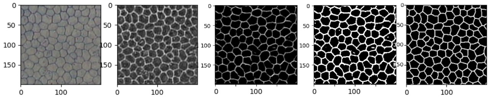
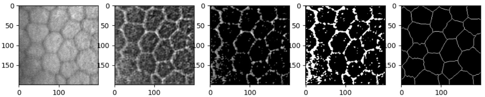
Clearly, the results on the Rotterdam dataset are a lot more noisy. The Rotterdam dataset is slightly more out of focus and has lower contrast, making it inherently more challenging. A 200×200 pixel patch also contained fewer, larger cells; while this shouldn’t be an issue for inference (convolutional networks are particularly suitable for recognising features regardless of scale), during training, combined with the fact that the hand-labelled lines are much thinner, this results in a dataset dominated by negative examples.
Interestingly, when the model was explicitly trained on the Rotterdam data, it took many more epochs to achieve comparable results, even with more data provided. This is likely due to the label annotation method: the Rotterdam labels have much thinner lines, somewhat less consistently drawn, with small deviations and kinks from the unsteadiness of manual tracing.
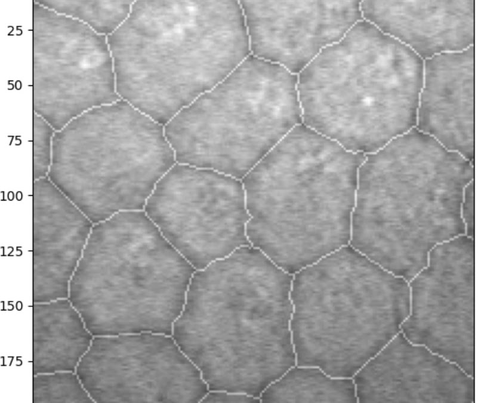
In combination, this results in a very thin, wobbling line, making it difficult for the model to decide which pixels to keep and which to discard.
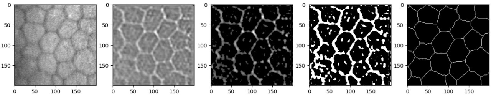
Fine-tuning
One last item of interest was to verify the performance of a model trained on the Alizarine dataset and subsequently fine-tuned on the Rotterdam dataset — the idea being that a model trained on a similar but somewhat ‘easier’ task would boost performance on the more challenging data.
This, unexpectedly, worked remarkably well. It took a long time (2h+) due to the very small learning rate (1e-5), but fine-tuning from a model already converged on the Alizarine dataset enabled it to break through the loss values it had previously stalled at. The loss had not even finished improving by the time I stopped the training loop, suggesting it would keep getting better with more time.
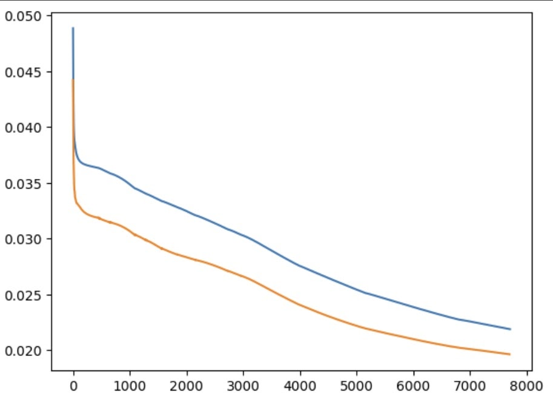
Even at this stage, the model is producing crisp and accurate boundaries on previously unseen images. There are numerous artefacts, but these could be easily removed with simple post-processing.
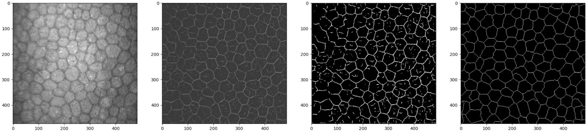
References
- Wei Zhang, Akira Hasegawa, Kazuyoshi Itoh, and Yoshiki Ichioka. Image processing of human corneal endothelium based on a learning network.
- Ruggeri, A.; Scarpa, F.; de Luca, M.; Meltendorf, C.; Schroeter, J. A system for the automatic estimation of morphometric parameters of corneal endothelium in alizarine red-stained images. Br. J. Ophthalmol. 2010, 94, 643–647.
- Bettina Selig, Koenraad A. Vermeer, Bernd Rieger, Toine Hillenaar and Cris L. Luengo Hendriks. Fully Automatic Evaluation of the Corneal Endothelium from In Vivo Confocal Microscopy. BMC Medical Imaging. 2015;15:13.